Suno
Presented by Baxter House Music
What Suno asked for
Suno is commissioning a sonic identity — the audio signature across product, brand film, and campaign, launching as a core element of the brand refresh. Three decisions were requested of Baxter House. This deck answers each.
A shortlist of ~5
Composers / producers / artists with reels, weighing organic-vs-electronic range, short-form impact, originality, and availability.
A budget range
Composer / producer fee inclusive of production, benchmarked to current market rates for a commission of this scope.
A timeline
From kickoff to final delivery, inclusive of discovery sessions, coordinated with Porto Rocha's motion design + the brand relaunch.
The feeling we're after
Originality, not homage. The direction is described as a feeling, not a sound — and it should hit like Netflix's Tu-dum.
Satisfying
A clean, resolved moment; it should feel complete and pleasurable on its own.
Anticipatory
Builds a charge of excitement, a sense that something is about to begin.
Ready to create
It should leave the listener wanting to open the app, start making something of their own.
Inspiring
Emotionally uplifting, without tipping into saccharine or triumphant.
Sonic texture
Full of soul and organic at its core — real instrumentation, real performance, real warmth — with electronic polish and texture layered in for contrast. The tension between organic soul/warmth and electronic sheen is the point; neither should dominate.
- Corporate
- Jingle-like
- Sterile tech-startup chime
- Literal “AI / robot” sonic tropes
Technical requirements
Compression legibility
The mnemonic must stay recognizable and satisfying through small, compressed playback — phone speakers, social-media compression, and in-app notification sounds.
Product usage
Suno must be used at some stage of the process — and they want to know how: prompts, refinements, and beyond.
Creative deliverables
The full deliverable suite Suno outlined. We scope to exactly this.
| Deliverable | Length (est.) | Purpose |
|---|---|---|
| Core mnemonic | 2–3 sec | Key brand identifier · app-open variant · brand-film closing signature |
| Micro sting | 0.5–1.5 sec | Social, trailers, notifications |
| Extended cinematic version | 8–15 sec | Keynotes, launch films, brand videos |
| Layered stems | Varies | Flexibility for editors / localization |
| Spatial mixes | Varies | Theater, mobile, headphones |
| Usage guidelines | — | Brand consistency |
| Visual sync versions | — | Motion / logo integration |
| Alternate emotional mixes | 3–5 sec | Different product surfaces |
| Compressed / small-speaker mixNew | Varies | Verified legibility on phone speakers & compressed social audio |
Who is Baxter House?
Sound, Story & Visual Context
The moment music lands in culture is multifaceted; sound, story, and visual context. We build for all three.
Music for Picture
Music that translates seamlessly to picture — and to the short-form moments that have to land in seconds.
Real Instrumentation, Modern Polish
Organic warmth at the core with electronic texture layered in — the exact tension Suno's brief calls for.
Artists as Cultural Entities
Deep relationships with a roster of artists, producers, and composers we can curate against any brief.

Sonic & Sync Track Record
A sample of Baxter House music-to-picture work — short-form, high-impact, and built to sit under motion. Curate this cut toward mnemonic-adjacent moments before sending.
Scaffold — swap in the strongest short-form / ident-style examples


Credit & brand storytelling
Base engagement is work-for-hire with no public credit required. But if there's strong creative synergy and interest from the talent, Suno is open to layering in credit and brand storytelling for marketing — an upside option, not a baseline, and never a filter on who gets shortlisted.
- Shortlist on the work first — we never gate on an artist's appetite for credit, exactly as the brief asks.
- Where an artist is open, shape a light behind-the-glass storytelling stream: making-of, studio footage, an artist Q&A, social cutdowns.
- Protect Suno's flexibility — the work-for-hire baseline stands; storytelling is layered in only on mutual interest.
- Baxter produces and curates that content, drawing on our IRL-presentation model and the House.
Five for Suno
Five composers / producers / artists, chosen so the slate collectively spans the organic-to-electronic spectrum — giving Suno real range to react to. Each has a full dossier on the following slides.
Martin Wave
Martin Wave is a Swedish-born producer, composer, and artist based in Los Angeles. Over his 14-year career, he has worked with stars like Post Malone, Vince Staples, Dua Lipa, Suki Waterhouse, Kacey Musgraves and Paloma Faith. His accolades include contributions to NCT DREAM’s global #1 album Hot Sauce and a Best Score win at Filmquest (2023).
His music has powered iconic campaigns for Apple, Marvel, Porsche, and Gatorade, as well as trailers for Killers of the Flower Moon, Fast X, Civilization VII, and Fortnite. With over 1.5 billion streams, 12 million Shazams, and 2.1 billion views, his work has achieved massive global reach.
Martin also co-founded PARASOL with his wife, Grace Hong. This creative community and label empowers purpose-driven artists to push boundaries and craft lasting, impactful work.
Khushi
Khushi is a British Grammy-nominated producer, artist, and songwriter known for his emotionally rich, forward-thinking production. A longtime collaborator of James Blake, Khushi co-produced Blake’s acclaimed album Assume Form, which earned a Grammy nomination for Best Alternative Album.
In addition to his work with Blake, Khushi has contributed to projects by Travis Scott, Rosalía, André 3000, Metro Boomin, Monica Martin, and A$AP Rocky, bringing a distinct blend of intimacy and innovation to everything he touches. Khushi and Blake also collaborated extensively on Khushi’s own debut album, Strange Seasons, a critically regarded artist project that further showcased his signature sound.
[Artist 03 Name]
[Bio to come. Confirm artist, then drop a short two-paragraph bio here in the same voice as Martin Wave and Khushi.]
[Artist 04 Name]
[Bio to come. Confirm artist, then drop a short two-paragraph bio here in the same voice as Martin Wave and Khushi.]
[Artist 05 Name]
[Bio to come. Confirm artist, then drop a short two-paragraph bio here in the same voice as Martin Wave and Khushi.]
Recommended budget range
- Discovery sessions & creative development
- Core mnemonic + app-open and brand-film closing variants
- Micro sting, extended cinematic version, alternate emotional mixes
- Layered stems, spatial mixes, and a verified compressed / small-speaker mix
- Usage guidelines and visual-sync versions for motion/logo integration
- Revisions and coordination with Porto Rocha's motion design
Process & Timeline
A simple, four-step path from first call to final delivery: fast demos, unlimited revisions, and a clean handoff of every asset.
Intro Call + Exploration
We open with a call to align on goals and priorities: Suno’s positioning, audiences, and the sounds and genres closest to the brand. Together we explore audio techniques that feel cohesive with the wider identity.
Demos
We create multiple demos from a shortlist of our top-tier artists, with a fast 3 to 5 day turnaround so you hear real directions quickly.
Revisions
Unlimited revisions and additional rounds of composition. Composers stay on stand-by for quick turnaround until the direction is locked.
Final Delivery
We finalize and deliver the full asset suite for the winning track, ready for product, film, and campaign.
Paced to Porto Rocha’s motion design and the Oct/Nov brand relaunch. We firm up exact dates against the confirmed kickoff.
Scaffold — copy adapted from Baxter’s standard process; confirm turnaround windows.The House
Sweeping views, stunning architecture, and 6 state-of-the-art music studios.


{kind=link}
{kind=link}
Let's make Suno sound like Suno.
A signature, not a jingle
An identity that hits like a Tu-dum — organic soul and electronic sheen in tension, legible from keynote to phone speaker.
The right artist for the brief
Five reels spanning the spectrum, each scored against exactly what Suno asked for.
A partner through delivery
Discovery to final stems, in step with Porto Rocha and the brand relaunch.